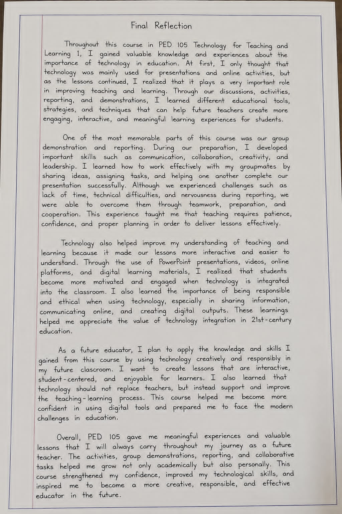

Final
Reflection
Looking back on a transformative journey — the lessons learned, the challenges overcome, and the educator I am becoming.
A Journey Through
PED 105
How Technology Changed My Perspective
Throughout PED 105, I gained invaluable knowledge about the role technology plays in education. At first, I thought technology was mainly for presentations and online activities — but as lessons progressed, I realized it is a powerful force for improving how teachers teach and how students learn. Through discussions, activities, reporting, and demonstrations, I discovered a wide range of tools that create engaging, interactive, and meaningful learning experiences.
Group Work That Shaped Who I Am
The group demonstration and reporting was among the most memorable experiences of this course. I developed communication, creativity, leadership, and the ability to work effectively with others. Despite challenges — limited time, technical difficulties, and nerves during reporting — we overcame every obstacle through teamwork and preparation. This taught me that great teaching demands patience, confidence, and meticulous planning.
Making Learning Come Alive
PowerPoint presentations, videos, online platforms, and digital learning materials transformed how I understood our lessons — and revealed how students become more motivated when technology is thoughtfully integrated. I also discovered the importance of being responsible and ethical: sharing information carefully, communicating respectfully online, and creating outputs that reflect integrity. Technology, used well, amplifies everything good in a classroom.
The Educator I Am Becoming
As a future educator, I will apply everything I've learned — using technology creatively and responsibly to build lessons that are interactive, student-centered, and truly enjoyable. I now understand that technology should never replace teachers; it should support and elevate the teaching-learning process. PED 105 strengthened my confidence, sharpened my digital skills, and inspired me to become a creative, responsible, and effective PE teacher.
"Technology should not replace teachers — it should support and improve the teaching-learning process, making every student's experience richer and more meaningful."
— Jessa Paradiang, BPED Student · PED 105 ReflectionKey Takeaways & Insights
The greatest lesson: digital tools amplify great teaching but cannot substitute the human connection between teacher and student.
Group work developed skills far beyond academics — trust, communication, shared responsibility, and a genuine sense of community.
Platforms like Kahoot, Google Forms, Canva, and YouTube transform passive learning into active, personalized, and engaging experiences.
Using technology responsibly — respecting privacy, copyright, and safe communication — is a core professional skill for every modern educator.
Designing adaptable lessons — blended, modular, or face-to-face — ensures no learner is left behind, regardless of their context.
Every technical difficulty, tight deadline, and moment of nervousness became a stepping stone toward becoming a more resilient and prepared educator.
My Learning Journey
Tap each milestone to read more about what I learned and experienced.
Thank You 🌟
This portfolio marks not just the end of PED 105, but the beginning of my journey as a future Physical Education teacher. Every lesson, every challenge, and every collaboration has shaped who I am. I carry these experiences with me — prepared, passionate, and purposeful.
← Back to Portfolio Home